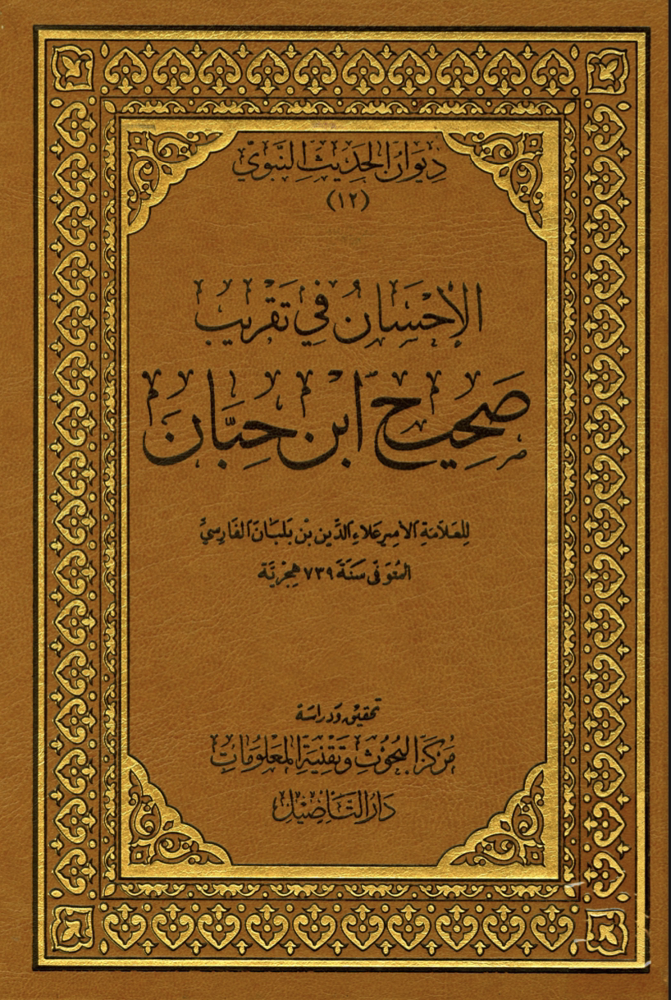

In Saḥiḥ Ibn Hibban
1st narration: Jibreal said to the Prōphēt ﷺ ‘Aishā (رضي الله عنها) is your wife in this life and the hereafter
2nd narration: The Prōphēt ﷺ tells ‘Aishā you’re my wife in this life and here after
3rd narration: ‘Aishā (رضي الله عنها) asks who are the wives who will be with you in jannah o Prōphēt ﷺ? He said: “Verily you’re from them”
Prophet Muhammed said : "Would you be pleased to be my wife in this worldly life and the hereafter?" I (aisha) said: "By Allah yes" He (Prophet Muhammed) said:
"You are my wife in this worldly life and in the hereafter"
Sahih
Ibn Abbas enters upon aisha after receiving permission from her and her brother.
"ibn abbas entered, gave salam, and sat and said: Glad tidings oh mother of the believers, By Allah what is between you and every harm and misfortune will leave you
and you will meet the most beloved Muhammed and his companions until your soul leaves your body. You were most beloved of all the wives of the messenger of God and
he only loved the good. And Allah revealed your innocence from above the 7 heavens. By Allah you are blessed"
Aisha narrated: "The Messnger of Allah returned to me one day from the janazah al baqiee, and i found myself having a headache and i said: 'Oh, my head!'
The Prophet (ﷺ) said, 'Nay, I should say, 'Oh my head!'. Then he said: 'It will not matter if you were to die before me, for i will take care of you, wash you,
shroud you, offer the funeral prayer for you and bury you.' " At the end of the hadith it says "Then he begain to suffer from the pain in which he died"
The Prophet Muhammad ﷺ here said "offer the funeral prayer for you" Why would the Prophet Muhammad ﷺ pray over a munafiqa or a kaffira or as the rafdiah like to say BOTH!
On top of that, this hadith occured at the end of the life of the Prophet... which means that Aisha was not a kaffira or a munafiqa since he said "
i will offer the funeral prayer for you if you die before me"
The reason why he cant pray over a munafiqa is because Allah has made it prohbited for him. It is mentioned twice in the quran twice
Surah 9:84 : " And do not ever offer ˹funeral˺ prayers for any of their dead, nor stand by their grave ˹at burial˺, for they have lost faith in Allah and His Messenger and died rebellious."
Surah 9:113: It is not ˹proper˺ for the Prophet and the believers to seek forgiveness for the polytheists, even if they were close relatives,
after it has become clear to the believers that they are bound for the Hellfire.
So would the rafidah say that Prophet Muhammad went against the command of Allah when he said he will pray over his wife?
Allah's Messenger (ﷺ) said, "Many amongst men attained perfection but amongst women none attained the perfection except
Mary, the daughter of `Imran and Asiya, the wife of Pharaoh. And the The superiority of 'Aishah رضي الله عنها to other women is
like the superiority of Tharid (i.e. an Arabic dish that’s very good in taste) to other meals.”

Replacement scans^
Ibn Abbas عليه السلام said to Aisha عليها السلام:
“You were the most beloved of the women of the Messenger of Allah ﷺ, and he would not love except that which was good),
and Allah sent down wahy of your innocence from above the seven heavens.”
Narrated Amr bin Al-As:
The Prophet (ﷺ) deputed me to read the Army of Dhat-as-Salasil. I came to him and said, "Who is the most beloved person to you?" He said, " Aisha."